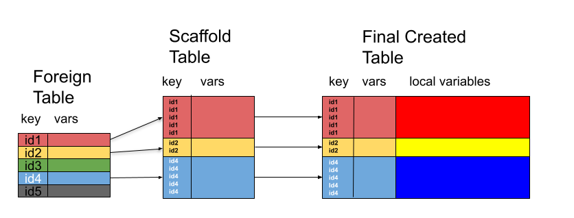
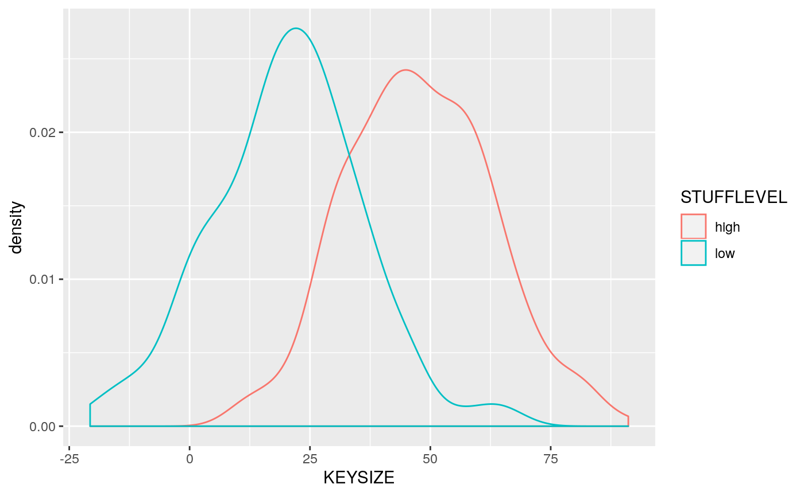

creating_synth_relational_data.RmdSynthetic data provides a privacy-safe mechanism for developing, benchmarking, testing, and showcasing analysis plans and pipelines. Generating rectangular synthetic data is relatively straightforward within R, using a combination of the in-built sampling functions and either dplyr’s mutate or simple data.frame object manipulation.
Many crucial types of data, however, involve inter-related types of normalized (in the database sense) data, with columns in one table acting as keys or lookups within another. An example of this is the CDISC data standard for clinical trial data, which has some tables which contain one row per patient (ADSL) and other tables in which a patient might have 0, 1, or many rows (ADAE).
Furthermore, when synthesizing in one of these 0 to many records per patient type tables, the distributions to sample observations from are often conditional on information (typically demographic or study structure, i.e. Arm, in CDISC) from the table which originates the key.
The utilities in this package provide a framework to define recipes for both the foreign-key/implicit join and distributional conditionally aspects of this problem. We also provide machinery for injecting randomness artificially into data (either synthetic or real).
A table recipe is a set of instructions sufficient to synthesize a single rectangular dataset, including any conditionality or joint nature between variables within that single dataset.
The recipe is a tibble made up of one or more rows, with each row defining the instructions to synthesize one or more variable in the form of the following mandatory columns:
lookup_fun can resolve to one, that accepts n, .df, and ... and returns either an atomic vector of length , or a data.frame/tibble with n rows.n and .df.To generate jointly-distributed synthetic variable data, we simply specify more than one variable in the variables column, and specify a func which returns a data.frame containing all synthesized variables together.
To generate conditionally-distributed synthetic variables, we specify one or more variables in the dependencies column. when this occurs, the variables named in that row’s variables value will not be generated until after all the named dependency variables have been synthesized, and func will be passed the current partially synthesized dataset as the .df parameter. The body of the function can then use those values however the recipe-creator desires to generated the required covariance/conditionality structure.
Tables oftentimes do not live in isolation; rather they live with implicit or explicit relationships with other tables. In these cases, when constructing synthetic or synthesized data, the tables cannot be created independently of each other. Thus we require a way of implementing, before the data construction step, these relationships. Relational databases do this via schema, but this is focused on data storage, rather than its construction.
In the context of the construction of interrelated tables, we define the scaffold table for a to-be-constructed dependent table — in our formulation one that once constructed, will have a foreign key relationship with another already existing table — as a table which contains the foreign key values and, optionally any other values from the foreign table, that will ultimately appear in the created table, but none of the variables which will reside primarily in the new table. We note that the foreign key values in the scaffold table need not be unique, as they would generally be in the foreign table, and that not all of the values for the key present in the foreign table need appear in the scaffold table, as seen below.

We define a scaffolding join recipe as a recipe which creates the scaffold table for a prospective data table given a collection of already existing tables which contains
A scaffolding join recipe is a tibble with the following columnns:
foreign_tbl that will act as a foreign keyforeign_tbl that act as dependencies for generating those named in variables
followed by the standard mandatory columns of a table recipe.
The difference between the process of synthesizing data from a scaffolding join recipe and a table recipe, is that in the scaffold recipe func can generate data of any dimension, provided that it contains the foreign_key variable populated only with (possibly duplicated) values which appear in that column of foreign_tbl. This is then Right Outer Joined to the foreign table to create the scaffold table of the desired dimensions containing the data in foreign_tbl subsetted and replicated as necessary for the merge.
This newly dimensioned scaffold table is intended to be used as a starting point for synthesizing the remaining desired variables using a table recipe.
A missingness recipe is a recipe similar to a table recipe, the differences being that there is no dependencies column and the func column contains a function will return a logical vector with a length equal to the number of rows in the synthesized data, with TRUE indicating missingness. This function will be called and the resulting missingness injected, in order, so non-independent missingness across columns is achievable if desired.
individual tables are created from data table recipes using gen_table_data, which takes N, the number of rows to synthesize, recipe the recipe to use, and df a starting point/partially generated dataset to which newly synthesized data should be added.
Here we define a recipe for “sillydata”, which has 3 variables, ID, STUFFLEVEL, and KEYSIZE, where:
ID will containue unique values generated by subjid_func
STUFFLEVEL will have values "high" and "low", randomly sampled with sample_fct, andKEYVALUE is normalaly distributed conditional on STUFFLEVEL, with a mean of 50 for the "high" level and 20 for the "low", as implemented by the keysize function.## Loading required package: tibblesuppressPackageStartupMessages(library(dplyr))
keysize <- function(n, .df, ...) {
levmean <- ifelse(.df$STUFFLEVEL == "high", 50, 20)
rnorm(nrow(.df), mean = levmean, sd = 15)
}
acct_dates <- function(n, firstopen, lastclose = Sys.Date(), p_closed = .15) {
starts <- rand_posixct(n = n, start = firstopen, end = lastclose)
ends <- rand_posixct(n = n, start = starts, end = lastclose)
if(p_closed > 0) {
nainds <- sample(seq_len(n), n - floor(n * p_closed), replace = FALSE)
ends[nainds] <- NA
}
data.frame(ACCT_OPEN=starts, ACCT_CLOSED=ends)
}
acctdate_vars <- c("ACCT_OPEN", "ACCT_CLOSED")
recipe <- tribble(~variables, ~dependencies, ~func, ~func_args, ~keep,
"ID", no_deps, "subjid_func", list(prefix="ID", sep=""), TRUE,
"STUFFLEVEL", no_deps, sample_fct, list(x = c("high", "low")), TRUE,
"KEYSIZE", "STUFFLEVEL", "keysize", NULL, TRUE,
acctdate_vars, no_deps, "acct_dates", list(firstopen = "2015-01-01", lastclose = Sys.Date()), TRUE)
sillydata <- gen_table_data(N = 500, recipe = recipe)## [1] "ID" "STUFFLEVEL" "KEYSIZE" "ACCT_OPEN" "ACCT_CLOSED"
## [1] "ID" "STUFFLEVEL" "KEYSIZE" "ACCT_OPEN" "ACCT_CLOSED"## ID STUFFLEVEL KEYSIZE ACCT_OPEN ACCT_CLOSED
## 1 ID001 high 35.81611 2020-09-18 18:35:48 <NA>
## 2 ID002 high 50.21808 2021-05-09 23:37:30 <NA>
## 3 ID003 low 62.29862 2017-01-25 15:13:23 2020-04-01 08:29:49
## 4 ID004 low 14.94920 2017-03-28 12:47:08 <NA>
## 5 ID005 high 57.76937 2015-07-07 04:20:34 <NA>
## 6 ID006 low 26.30120 2017-03-20 19:11:29 2018-08-28 20:02:48We can see that the conditional distribution worked by plotting the data densities for each STUFFLEVEL value
suppressPackageStartupMessages(library(ggplot2))
mu <- sillydata %>% group_by(STUFFLEVEL) %>% summarize(grp.mean = mean(KEYSIZE))
p <- ggplot(sillydata, aes(x=KEYSIZE, color=STUFFLEVEL)) +
geom_density()
geom_vline(data=mu, aes(xintercept=grp.mean, color=STUFFLEVEL),
linetype="dashed")## mapping: xintercept = ~grp.mean, colour = ~STUFFLEVEL
## geom_vline: na.rm = FALSE
## stat_identity: na.rm = FALSE
## position_identity
This process does the following:
df prepended if it was not NULL)Now suppose that we want to create another dataset where each of our ids from sillydata correspond with some number of “purchases”. We will do this by creating a scaffold join recipe
scaffolder <- rand_per_key("ID", mincount = 0, maxcount = 5, prop_present = 1)
sjrecipe <- tribble(~foreign_tbl, ~foreign_key, ~func, ~func_args,
"sillydata", "ID", "scaffolder", list())
## this function generates buy dates and makes sure BUYIDs are
## sequential globally and BUYDATEs (and thus BUYIDS) are
## sequential within each ID
##
## Each purchase is guaranteed to be between the account's
## start and end date
buydate_func <- function(n, .df, end = Sys.time()) {
n <- nrow(.df)
starts <- .df$ACCT_OPEN
ends <- .df$ACCT_CLOSED
ends[is.na(end)] <- end
dates <- rand_posixct(start = starts, end = ends, n = n)
ids <- .df$ID
odates <- order(ids, dates)
revit <- order(order(dates))
toret <- data.frame(BUYID = seq_len(n)[revit], BUYDATE = dates, stringsAsFactors = FALSE)
toret[odates,]
}
## lookup table for products and when they were available for purchase
products <- tribble(~PRODUCTID, ~DESC, ~AVAIL_ST, ~AVAIL_END,
"PROD1", "Doodad", "2010-01-01", Sys.time(),
"PROD2", "HLight Fluid", "2010-01-01", Sys.time(),
"PROD3", "Mcguffin", "2017-01-01", as.POSIXct("2017-12-31"),
"PROD4", "Spanner", "2010-01-01", Sys.time(),
"PROD5", "Thingbat", "2015-03-03", Sys.time(),
"PROD6", "Thingbat v2", "2018-03-03", Sys.time())
prodcols <- c("PRODUCTID", "DESC")
## note this is written inefficiently for illustrative purposes
## doing this efficiently is possible but much more complicated
##
## for each purchase, grab the BUYDATE and lookup which
## products were available at that time, then sample from
## those to see what was purchased.
prods_func <- function(n, .df) {
n <- NROW(.df)
BUYDATE <- .df$BUYDATE
pstarts <- as.POSIXct(products$AVAIL_ST)
pends <- products$AVAIL_END
rows <- lapply(BUYDATE,
function(bdt) {
pids <- products$PRODUCTID[pstarts <= bdt & bdt <= pends]
bought <- sample(pids, 1)
products[products$PRODUCTID==bought,]
})
do.call(rbind, rows)[,prodcols]
}
## The recipe for the purchases dataset
buys_rec <- tribble(~variables, ~dependencies, ~func, ~func_args, ~keep,
c("BUYID", "BUYDATE"), c("ID", acctdate_vars), "buydate_func", NULL, TRUE,
prodcols, "BUYDATE", "prods_func", NULL, TRUE)
## creat the dataset based ont he scaffolding join recipe and our
## already created sillydata dataset
buysdf <- gen_reljoin_table(sjrecipe, buys_rec, db = list(sillydata = sillydata))## [1] "ID" "STUFFLEVEL" "KEYSIZE" "ACCT_OPEN" "ACCT_CLOSED"
## [6] "BUYID" "BUYDATE" "PRODUCTID" "DESC"
## [1] "ID" "BUYID" "BUYDATE" "PRODUCTID" "DESC"## ID BUYID BUYDATE PRODUCTID DESC
## 1 ID001 808 2020-10-04 12:12:15 PROD5 Thingbat
## 2 ID001 896 2020-12-30 08:31:47 PROD1 Doodad
## 3 ID001 946 2021-02-01 19:07:33 PROD4 Spanner
## 4 ID001 1145 2021-05-23 14:48:34 PROD6 Thingbat v2
## 7 ID002 1119 2021-05-14 09:42:45 PROD6 Thingbat v2
## 5 ID002 1124 2021-05-15 05:12:53 PROD4 Spanner